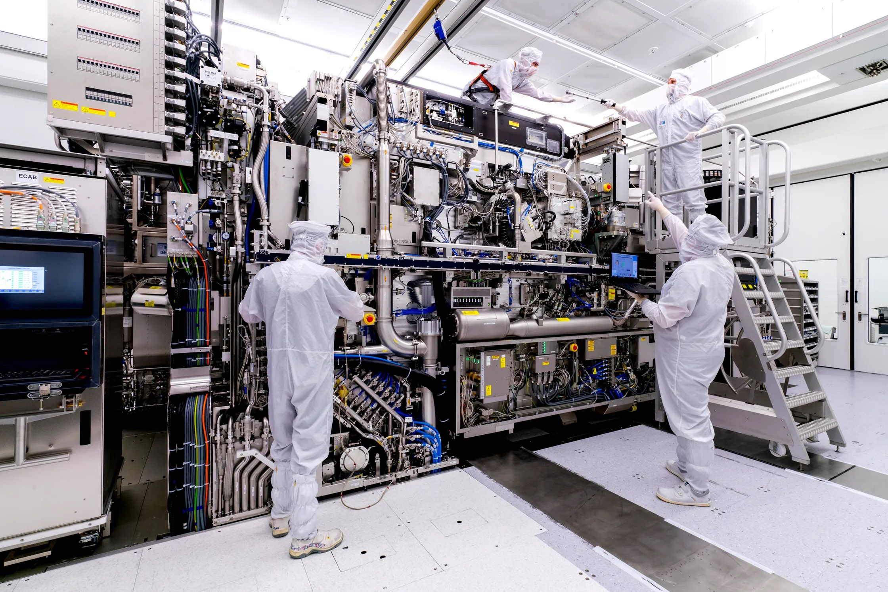

My Resume
Engineering
Not only do I have many engineering courses under my belt, but I also have years of experience with highly technical problem-solving and engineering. The most recent of which is with ASML, the most advanced and in demand semiconductor lithography company in the world. Through my engineering experience I have learned strong troubleshooting skills.
Leadership
For the past 10 years I have had many leadership opportunities. I have been a leader over groups of individuals ranging from 4 to over 200 and extends from volunteer groups, administrative departments, technician groups, and student groups.

Work Experience
Since I have been able to work I have been a dedicated employee and a driven worker. I am always looking for ways to do better in the position that I am assigned to. While my work experience is primary in engineering, all of it has taught invaluable lessons and is applicable to a career in software development.